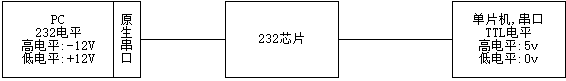
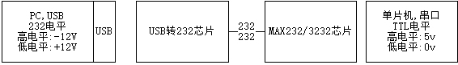
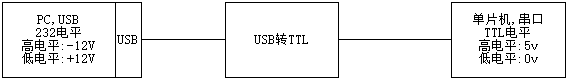
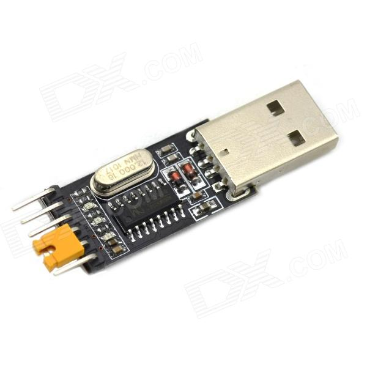

树莓派学习之USB转串口
最近研究树莓派，需要通过usb转串口去连接树莓派，然后设置其wifi连接。于是将用到计算机硬件知识整理一下，并记录通过usb转串口设置树莓派wifi连接的过程。
硬件知识
计算机硬件常用接口有并口和串口，对应串行通信和并行通信。串行通信（英语：Serial communication）是指在计算机总线或其他数据信道上，每次传输一个比特数据，并连续进行以上单次过程的通信方式。与之对应的是并行通信，它在串行端口上通过一次同时传输若干比特数据的方式进行通信。
串行通信被用于长距离通信以及大多数计算机网络，在这些应用场合里，电缆和同步化使并行通信实际应用面临困难。凭借着其改善的信号完整性和传播速度，串行通信总线正在变得越来越普遍，甚至在短程距离的应用中，其优越性已经开始超越并行总线不需要串行化组件(serializer)，并解决了诸如时钟偏移（Clock skew）、互联密度（interconnect density）等缺点。PCI到PCI Express的升级就一个例子。
并口
并行接口，简称并口。并口采用的是25针D形接头。所谓“并行”，是指8位数据同时通过并行线进行传送，这样数据传送速度大大提高，但并行传送的线路长度受到限制，因为长度增加，干扰就会增加，数据也就容易出错，目前，并行接口主要作为打印机端口等。
串口
串口叫做串行接口，也称串行通信接口，即COM口。按电气标准及协议来分包括RS-232-C、RS-422、RS485、USB等。 RS-232-C、RS-422与RS-485标准只对接口的电气特性做出规定，不涉及接插件、电缆或协议。
串行端口可以用于连接外置调制解调器、绘图仪或串行打印机。它也可以控制台连接的方式连接网络设备，例如路由器和交换机，主要用来配置它们。
- RS-232-C
也称标准接口，是目前最常用的一种串行通讯接口。它是在1970年由美国电子工业协会（EIA）联合贝尔系统、 调制解调器厂家及计算机终端生产厂家共同制定的用于串行通讯的标准。
传统的RS-232-C接口标准有22根线，采用标准25芯D型插头座。自IBM PC/AT开始使用简化了的9芯D型插座。计算机一般有两个串行口：COM1和COM2，9针D形接口通常在计算机后面能看到。现在有很多手机数据线或者物流接收器都采用COM口与计算机相连。
- RS-422
为改进RS-232通信距离短、速率低的缺点，RS-422定义了一种平衡通信接口，将传输速率提高到10Mb/s，传输距离延长到4000英尺（速率低于100kb/s时），并允许在一条平衡总线上连接最多10个接收器。
- RS-485
为扩展应用范围，EIA又于1983年在RS-422基础上制定了RS-485 标准，增加了多点、双向通信能力，即允许多个发送器连接到同一条总线上，同时增加了发送器的驱动能力和冲突保护特性，扩展了总线共模范围，后命名为 TIA/EIA-485-A标准。
- Universal Serial Bus（通用串行总线）
简称USB，是目前计算机上应用较广泛的接口规范，由Intel、Microsoft、Compaq、IBM、NEC、Northern Telcom等几家大厂商发起的新型外设接口标准。USB接口是计算机主板上的一种四针接口，其中中间两个针传输数据，两边两个针给外设供电。USB接口速度快、连接简单、不需要外接电源，传输速度12Mbps，新的USB 2.0可达480Mbps；电缆最大长度5米，USB电缆有4条线：2条信号线，2条电源线，可提供5伏特电源，USB电缆还分屏蔽和非屏蔽两种，屏蔽电缆传输速度可达12Mbps，价格较贵，非屏蔽电缆速度为1.5Mbps，但价格便宜；USB通过串联方式最多可串接127个设备；支持热插拔。最新的规格是USB 3.1。
- RJ-45接口
是以太网最为常用的接口，RJ45是一个常用名称，指的是由IEC(60)603-7标准化，使用由国际性的接插件标准定义的8个位置（8针）的模块化插孔或者插头。
USB转串口原理
硬件接口电气特性
TTL电平：一般用作数字芯片的电平，例如芯片的供电电压是5V，那么高电平就是5V，低电平就是0V，这里所说的电平，就是TTL电平。
232电平：232电平特制电脑串口的电平，-12V左右为正电平，+12V左右为低电平。我们刚才所见到的“USB转串口线”和电脑原生的串口，就是232电平。
USB转串口方法
PC的串口电气特性是232电平，单片机的串口电气特性是TTL电平，这两个就不一样，肯定需要某个芯片或者电路来进行转换匹配才可以通信。这个时候我们就需要TTL转232芯片了，常见的是MAX232,MAX3232等。连接方式如下:

但是随着USB接口的普及，当前计算机已经取消了串口。为实现232到TTL的转换，又需要USB转232。连接方式如下：

为简化，可将USB转232和232转TTL集成到一个芯片上。这样的芯片常见的有CH340、PL2303。连接方式如下：

常见的CH340芯片如下图所示：

通过USB转串口连接树莓派
下面介绍在Debian Linux主机通过USB转串口连接树莓派的过程。
配置树莓派开启串口通信
将树莓派操作系统镜像烧录到SD卡后，打开boot分区，编辑其config.txt，在其末尾添加如下代码，以开启串口通信权限。
1 | enable_uart=1 |
通过USB转串口物理连接树莓派
通过将USB转串口将Debian主机和树莓派物理连接好之后，给树莓派加电启动。
查看Debian系统能否识别ch340芯片
在官方Linux内核版本中自Kernel2.6以后就默认包含了对CH340/CH341芯片的驱动支持。在系统的默认驱动目录/lib/modules/$(uname -r)/kernel/drivers内可找到ch340芯片的驱动文件ch341.ko。
使用命令lsusb或dmesg查看linux系统是否识别USB转串口硬件。
1 | ~$ lsusb |
Bus 001 Device 006: ID 1a86:7523 QinHeng Electronics HL-340 USB-Serial adapter表明Linux系统识别了usb转串口线缆，芯片类型为HL-340。
‘dmesg’命令显示linux内核的环形缓冲区信息，我们可以从中获得诸如系统架构、cpu、挂载的硬件，RAM等多个运行级别的大量的系统信息。当计算机启动时，系统内核（操作系统的核心部分）将会被加载到内存中。在加载的过程中会显示很多的信息，在这些信息中我们可以看到内核检测硬件设备。运行dmesg，输出如下：
1 | ~$ sudo dmesg | tail |
[ 4248.456097] ch341 1-3:1.0: ch341-uart converter detected;
[ 4248.456464] usb 1-3: ch341-uart converter now attached to ttyUSB0说明linux系统识别了usb转串口适配器，并附加到ttyUSB0文件上。
使用minicom连接树莓派
minicom是linux平台的串行通信程序，类似于windows的超级终端程序。
1 | $ usermod -a -G dialout $USER |
连接上树莓派后，输入用户名pi和密码raspberry，即可进入系统。
1 | Raspbian GNU/Linux 9 raspberrypi ttyS0 |
退出minicom，按Ctrl＋A，再按下X键，会提示你是否退出，yes就可以了。
配置树莓派wifi连接
查看周围wifi热点信息
1 | pi@raspberrypi:~$ iwlist scan |
配置连接到wifi热点
1 | # 编辑wifi文件 |
参考文献
- https://www.cnblogs.com/zcshan/archive/2010/12/03/com.html ,by 水寒
- https://zh.wikipedia.org/wiki串行端口 , by wikipedia
- https://blog.csdn.net/he_wen_jie/article/details/50983076. by hwj666
- https://linux.cn/article-3587-1.html , by linux中国
- https://blog.csdn.net/JAZZSOLDIER/article/details/70170466 ， by SoldierJazz2018
- http://blog.51cto.com/irinilu/289622, by feng9422
- Pipci. Linux 串口终端调试工具minicom[EB/OL].https://blog.csdn.net/Pipcie/article/details/79379451, 2018-02-26.
- https://blog.csdn.net/huayucong/article/details/51376279， by huayucong
- USB转串口CH340接线方法,2015-11-03.